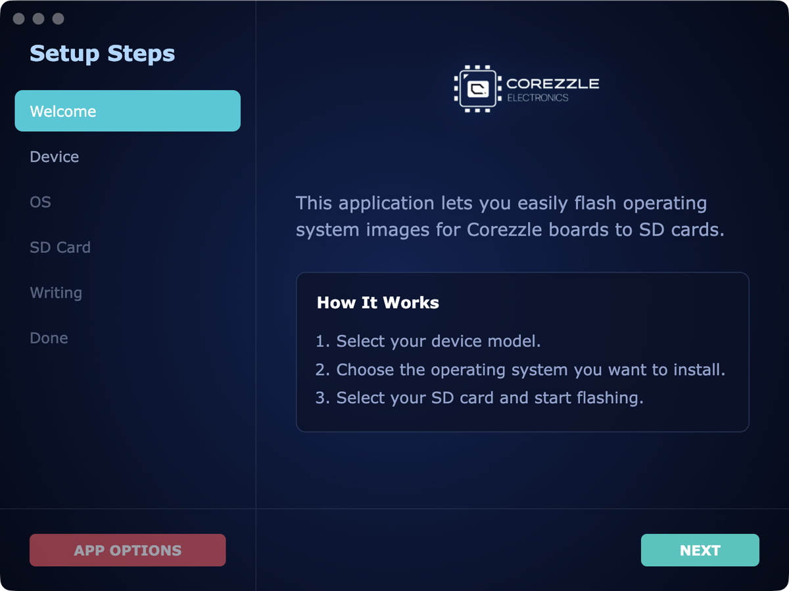
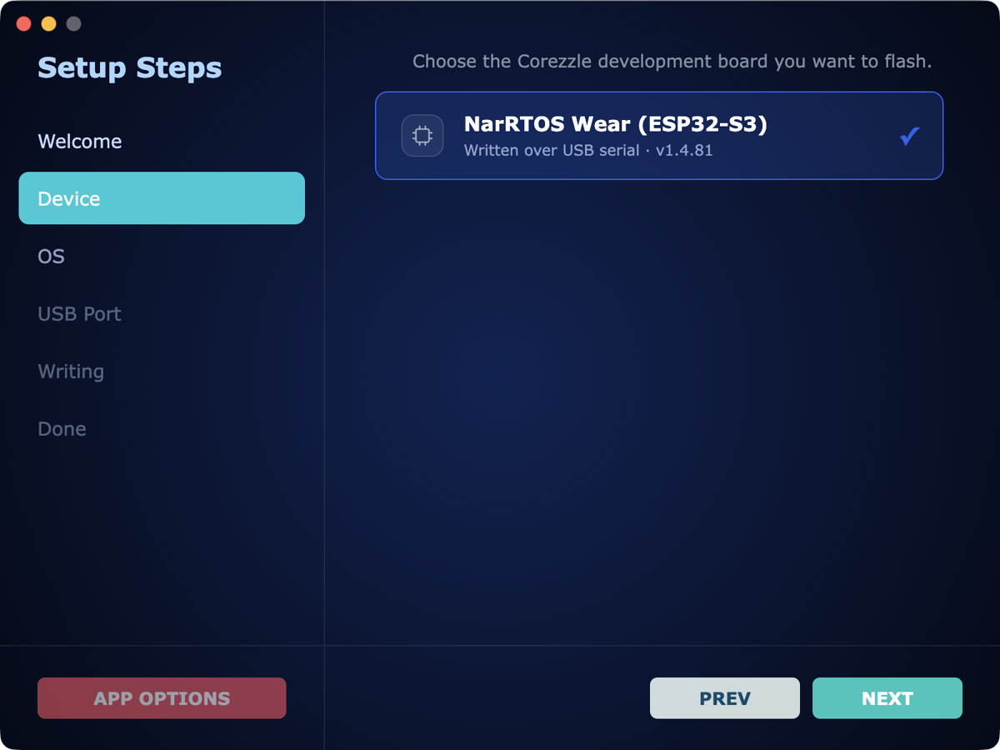
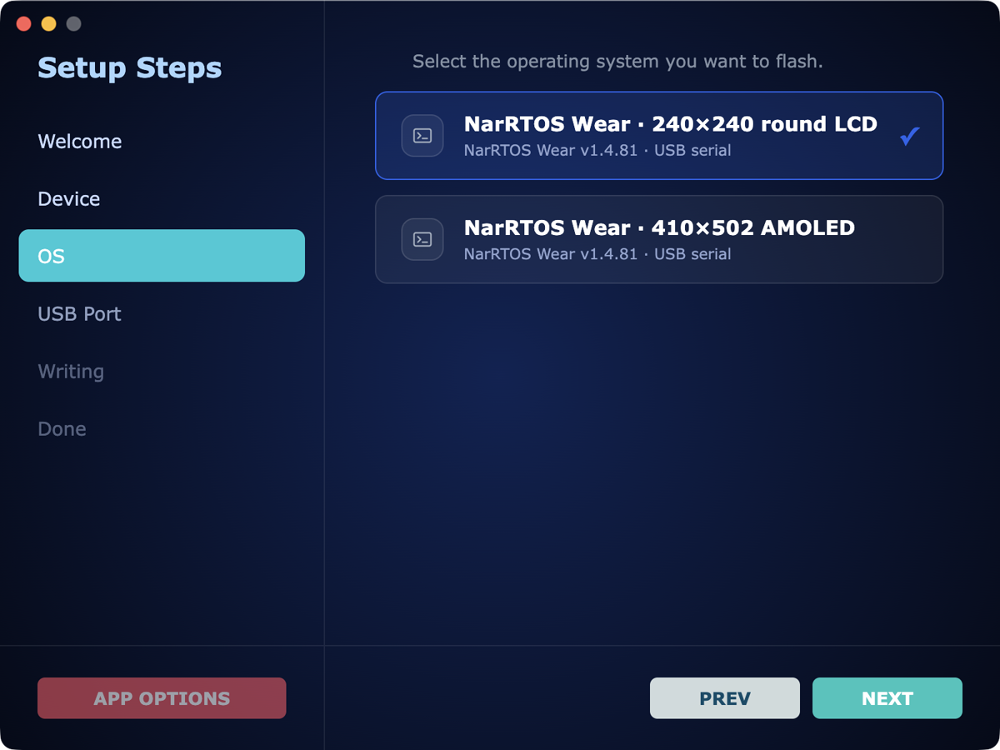
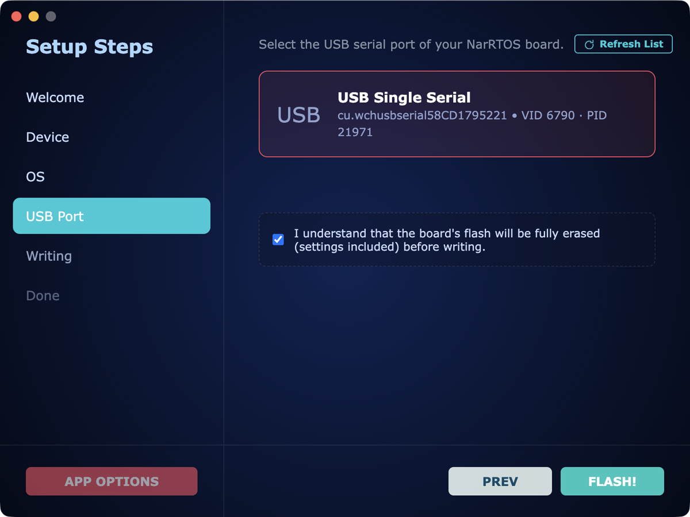
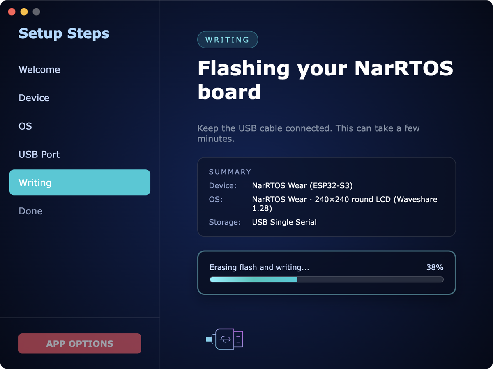
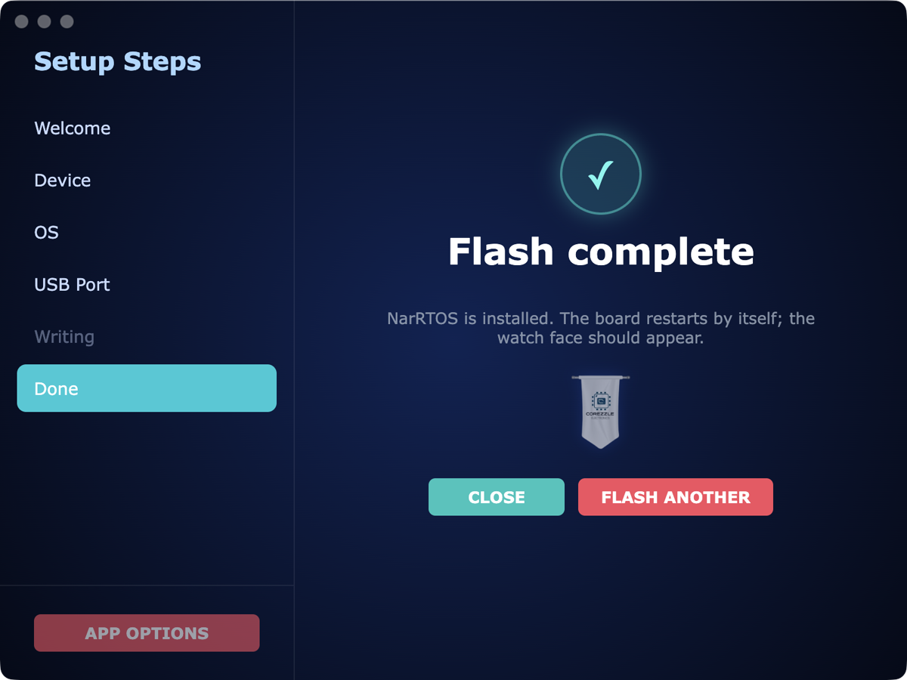

Corezzle Imager ile Yükleme
Geliştirme aracı kurmadan, kod derlemeden: Corezzle Imager, NarRTOS'un hazır sürümünü USB kablosuyla karta yazar. Kartı tak, kartını seç, düğmeye bas; birkaç dakika sonra saat kadranı ekrana gelir.
Bu sayfa daha önce hiç yazılım yüklememiş biri için yazıldı. Baştan sona 10 dakika sürer, bunun 2-3 dakikası yazma süresidir. Kodu değiştirmek ya da kendiniz derlemek isterseniz Başlarken sayfası oraya götürür; bu sayfa için gerekmez.
Neye ihtiyacınız var
| Bir kart | NarRTOS Wear kartlarından biri: dikdörtgen ekranlı AMOLED ya da yuvarlak 240×240 LCD |
| USB kablosu | Karta uygun uçta ve veri aktaran bir kablo |
| Bilgisayar | Windows ya da macOS; internet bağlantısı (sürüm dosyası indirilir) |
| Corezzle Imager | Corezzle'ın masaüstü uygulaması; aşağıda kuruluyor |
Telefon şarj kablolarının bir kısmı yalnız elektrik taşır, veri taşımaz. Böyle bir kabloyla kart bilgisayarda hiç görünmez. Kart listede çıkmıyorsa ilk deneyeceğiniz şey kabloyu değiştirmektir.
Kurulum
1. Corezzle Imager'ı indirip kurun
Corezzle'ın indirme sayfasından işletim sisteminize uygun dosyayı alın.
- Windows: İnen kurulum dosyasını çalıştırın. Windows "Windows protected your PC" (bilgisayarınız korundu) penceresi gösterirse More info → Run anyway deyin; uygulama yeni olduğu için bu uyarı çıkar. Kurulum kendiliğinden tamamlanır ve uygulama açılır.
- macOS: İnen
.dmgdosyasını açın, Corezzle Imager simgesini Uygulamalar (Applications) klasörüne sürükleyin. İlk açılışta "internetten indirildi" uyarısına Aç deyin.

2. Kartı bilgisayara takın
USB kablosuyla bağlayın; kartın üzerinde küçük bir ışık yanmalı. Kartta CH343 USB çipi var; çoğu bilgisayar bunu kendiliğinden tanır. Tanımazsa üreticinin CH34x sürücüsünü kurup bilgisayarı yeniden başlatın. Bunu ancak 5. adımda kart listede çıkmazsa yapmanız gerekir.
3. Kartınızı seçin (Device)
Uygulamayı açın, NEXT deyin. Kart listesinde NarRTOS Wear (ESP32-S3) kartına tıklayın, NEXT.

4. Sürümü seçin (OS)
Kartınıza göre birini seçin:
- NarRTOS Wear · 410×502 AMOLED: dikdörtgen ekranlı kart.
- NarRTOS Wear · 240×240 round LCD: yuvarlak ekranlı kart.
Yanlış seçerseniz zarar olmaz; yazma biter, ekran karanlık kalır, doğru sürümle bir kez daha yazarsınız. Seçince NEXT.

5. USB portunu seçin ve yazın (USB Port)
Listede kartınız USB Single Serial adıyla görünür (altında
wchusbserial… ya da COM3 gibi bir adres). Ona tıklayın.
Görünmüyorsa kabloyu değiştirin, Refresh List deyin; hâlâ yoksa 2. adımdaki
sürücüyü kurun.
Alttaki onay kutusunu işaretleyin: kartın belleği tamamen silinip yeniden yazılacak (ilk kurulumda olması gereken bu). Çıkan soruya OK, sonra FLASH!, tekrar OK.

6. Bekleyin (Writing)
Ekranda sırasıyla Downloading, Connecting to the board, Erasing flash and writing ve yüzde görünür; 1-2 dakika sürer. Bu sırada kabloyu çekmeyin. En sonda Restarting the board der ve Done ekranı gelir.

7. Kartta ne olur
Kart kendini yeniden başlatır; 4-5 saniye sonra ekran ışığı yanar ve saat kadranı gelir. Ekranda sağa kaydırırsanız uygulama menüsü açılır. Bundan sonraki güncellemeleri cihaz kendisi indirir (OTA); Imager'ı yalnız ilk kurulum ya da sıfırlama için kullanırsınız.

İlk denemede en sık takılınan yerler
| Gördüğünüz | Sebebi ve çözümü |
|---|---|
| USB Port listesi boş, "No USB serial port found" | Önce kabloyu değiştirin (en sık sebep), sonra başka bir USB girişi, sonra CH34x sürücüsü. Her denemeden sonra Refresh List |
| Listede kartınız görünmüyor ama başka portlar var | Yalnız USB Single Serial satırı karttır; diğerlerini seçmeyin |
| "Expected an ESP32-S3 board, found …" | Seçtiğiniz port NarRTOS kartı değil; doğru portu seçin |
| Yazma yarıda kesildi, "Flashing failed" | Kablo oynamış ya da çekilmiş olabilir; takılı olduğundan emin olup RETRY deyin |
| Yazma bitti ama ekran karanlık | Ya yanlış sürüm seçildi (4. adım), ya da kart yeniden başlamadı: kabloyu çıkarıp takın. Düzelmezse doğru sürümle bir kez daha yazın |
| Windows: "Windows protected your PC" | More info → Run anyway. Uygulama yeni olduğu için gösterilen standart uyarı |
| macOS: "cannot be opened because Apple cannot check it" | Uygulamaya sağ tıklayıp Open seçin; bir kez yeter |